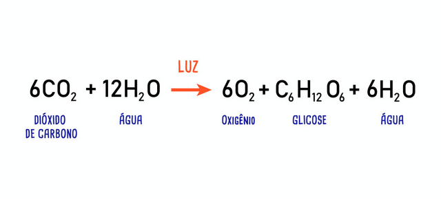

O que são Seres Produtores?
Entenda como esses organismos sustentam a vida no planeta üåç

Por Marcelo Fonseca - 06 de novembro de 2024
Seres produtores, tamb√©m conhecidos como autotr√≥ficos, são organismos que produzem seu pr√≥prio alimento a partir de substâncias inorgânicas, utilizando a energia do sol ou rea√ß√µes qu√≠micas. üå± Eles são a base das cadeias alimentares e sustentam a vida em ecossistemas.
A fotossíntese, que ocorre principalmente nas folhas, é responsável pela função das plantas como produtoras. Durante esse processo, as plantas absorvem a luz solar através da clorofila, um pigmento verde fundamental. A energia é usada para converter CO₂ e H₂O em glicose e O₂, que são essenciais para o crescimento e a saúde do ecossistema.
Equação da fotossíntese:
Esses processos são vitais para a manuten√ß√£o do equil√≠brio ambiental, j√° que as plantas não s√≥ alimentam outros organismos, como tamb√©m ajudam na purifica√ß√£o do ar üåø e na regula√ß√£o do clima.